EXIT configuration
DB2 traffic visibility with KTAP
-
One of databases deployed on raptor is DB2. It is not configured to support encrypted connections. However for some databases the KTAP is not enough to sniff non-TCP/IP stack based connections. Let’s check this kind of case. Change context to db2inst1 user on raptor.
su - db2inst1 -
List configured connections types can be displayed using command
db2 list database directory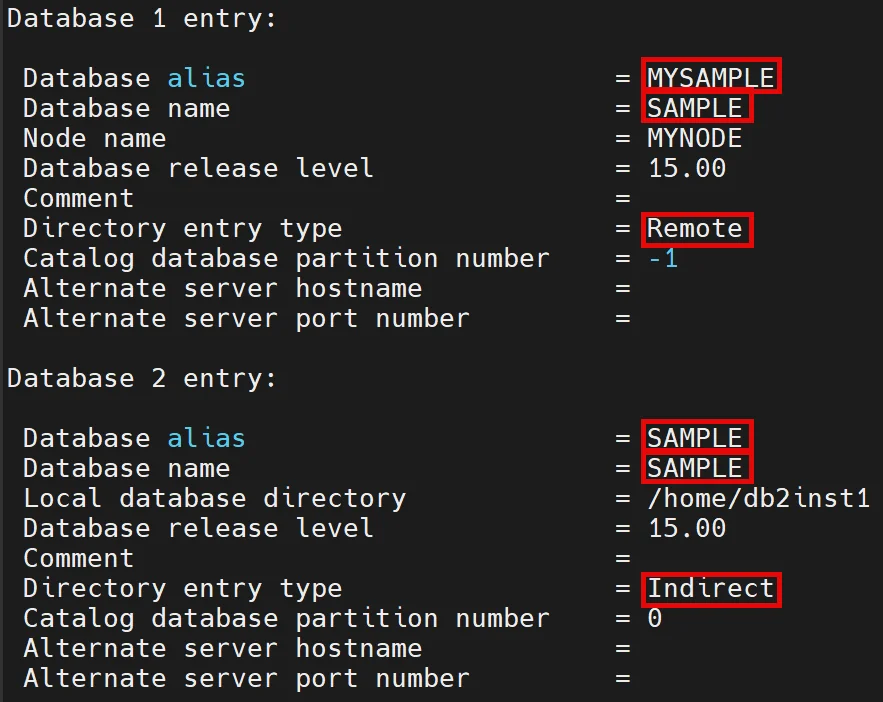
Notice that database SAMPLE can be referred (connected) using Remote (TCP/IP, mysample) or Indirect (Shared Memory, sample) alias. -
Let’s connect to sample database as a db2inst1 user usinng TCP connection (sampledb alias)
1 2 3
db2 connect to mysample user db2inst1 db2 "SELECT 'TCP/IP connection test' FROM sysibm.sysdummy1" -
Then, connect to sample using Shared Memory connection (sample alias)
1 2 3 4 5
db2 connect to sample user db2inst1 db2 "SELECT 'Shared Memory connection test' FROM sysibm.sysdummy1" exit -
Check traffic visibility in Full SQL (Training) report on coll1. Notice that activity from shared memory connection is not audited.
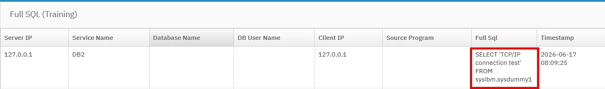
{kind=link}
{kind=link}
Configure DB2 system with EXIT
-
As a root user on raptor authorize db2inst1 user to send events to STAP.
/opt/guardium/modules/ATAP/current/files/bin/guardctl authorize-user db2inst1 -
As a db2inst1 user on raptor stop DB2 instance.
1 2 3
su - db2inst1 db2stop -
If command will not work you can force it using this one.
db2stop force -
Create directory for EXIT plugin in DB2 home directory.
mkdir -p /home/db2inst1/sqllib/security64/plugin/commexit -
Link EXIT plugin to DB2 directory.
ln -fs /usr/lib64/libguard_db2_exit_64.so /home/db2inst1/sqllib/security64/plugin/commexit/libguard_db2_exit_64.so -
Update DB2 configuration to load Guardium EXIT library during engine start.
db2 update dbm cfg using comm_exit_list libguard_db2_exit_64 -
Check that plugin has been correctly registered using command below. The interesting us line should be at the end of command output.
db2 get database manager configuration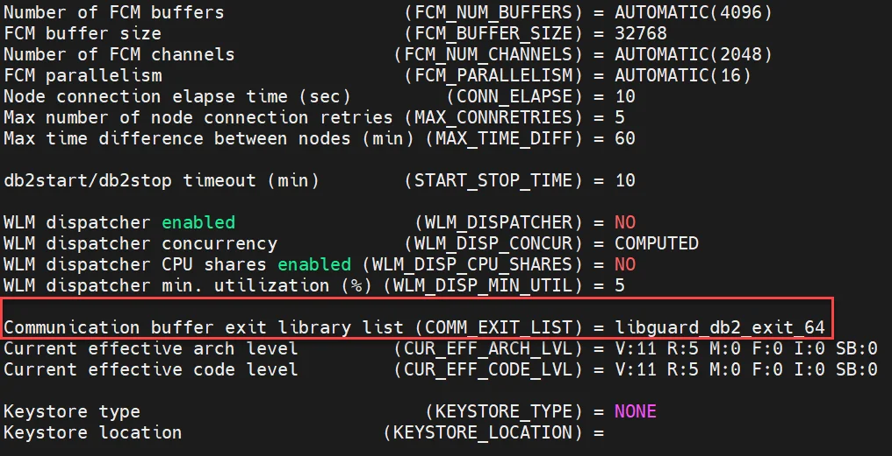
-
Start DB2 engine.
1 2 3
db2start exit -
Now we must re-create existing Inspection Engine for DB2 to adapt it to using EXIT data stream instead of KTAP one. We can do it directly from UI by removing old IE definition and adding a new one in S-TAP Control or execute API call. There is also possibility to execute
setup_exit.shscript on machine where database and STAP is installed. Let's use a script. Execute on raptor as a root.Script will require two answers – Y and N respectively./opt/guardium/modules/STAP/current/setup_exit.sh db2 -
Restart STAP.
/opt/guardium/modules/STAP/current/guard-config-update --restart stap - Now, DB2 is configured to use EXIT. We should even disable KTAP to avoid loading it to kernel space. However, we have on raptor many different databases that is why we do not want to disable KTAP and ATAP functionality for now.
{kind=link}
{kind=link}
DB2 traffic visibility with EXIT
-
Login to raptor as db2inst1 user and connect to DB2 using shared memory connection
1 2 3 4 5 6 7
su - db2inst1 db2 connect to sample user db2inst1 db2 "SELECT 'Shared Memory SECOND connection test with EXIT' FROM sysibm.sysdummy1" exit -
Check Full SQL (Training) report and notice db2inst1 user command has been sniffed.
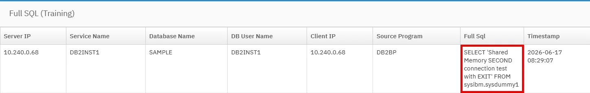
{kind=link}
Informix monitoring with EXIT (optional)
-
Start informix instance on raptor machine as a root user.
systemctl start informix-ifxserver -
Change context to informix user.
su - informix -
Connect to the database instance as a super admin. Notice that the session is established using a soctcp connection, which indicates plain, unencrypted communication without SSL/TLS.
Close database session inserting Ctrl+D1 2 3 4 5
dbaccess sysmaster - SELECT sid, TRIM(net_client_name) AS client_protocol, net_client_type, net_protocol, net_options, net_read_cnt, net_write_cnt FROM sysnetworkio WHERE sid = DBINFO('sessionid'); SELECT 'INFORMIX session without SSL';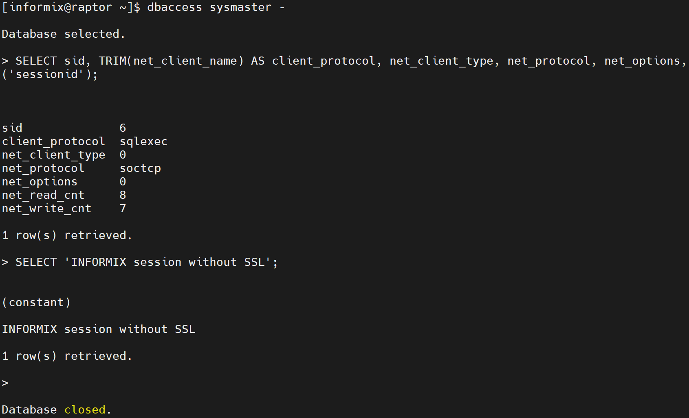
-
Confirm traffic visibility in Full SQL (Training) report on coll1.
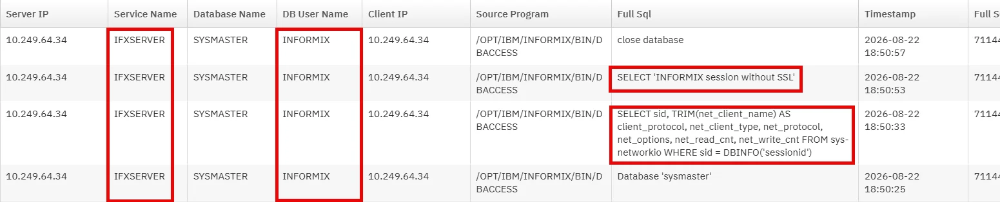
-
Connect to Informix again but this time using encrypted channel. The first
SELECTindicates that the connection is using the socssl protocol, which means the communication is encrypted using SSL/TLS. As expected, activity from this session will not be reported, because EXIT must be enabled to monitor encrypted connections.Close database session inserting Ctrl+D and1 2 3 4 5 6 7
export INFORMIXSERVER=ifxserver_ssl dbaccess sysmaster - SELECT sid, TRIM(net_client_name) AS client_protocol, net_client_type, net_protocol, net_options, net_read_cnt, net_write_cnt FROM sysnetworkio WHERE sid = DBINFO('sessionid'); SELECT 'INFORMIX session with SSL';exitfrom the informix user session.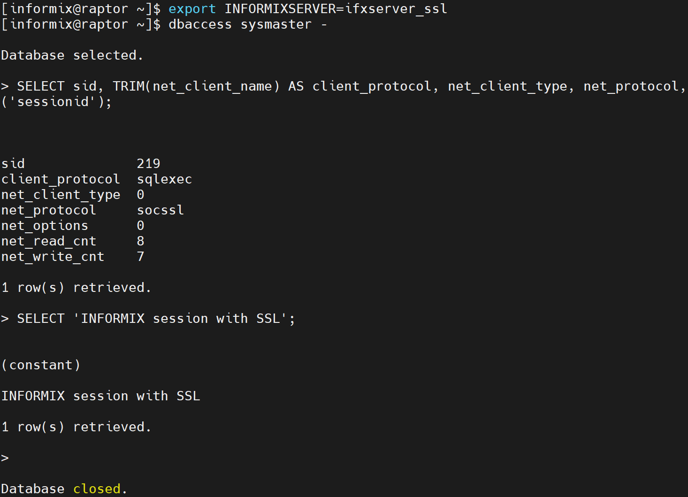
-
To configure EXIT, first switch to the root user and add the informix user to the guardium group.
/opt/guardium/modules/ATAP/current/files/bin/guardctl authorize-user informix -
Execute the following commands in the context of the informix user. Create a symbolic link to the library in the database instance's
libdirectory.1 2 3
su - informix ln -fs /usr/lib64/libguard_informix_exit_64.so $INFORMIXDIR/lib/libguard_informix_exit_64.so -
An then you must enable EXIT manually because recent Informix versions contain a defect that prevents the use of the script previously used for the DB2 database. First, as a informix user context, create a configuration file -
$INFORMIXDIR/etc/ifxguard.ifxserver- for standard unencrypted TCP connections and populate it with the following contents:NAME ifxguard.ifxserver WORKERS 6 LIBPATH /opt/ibm/informix/lib/libguard_informix_exit_64.so DEBUG 2 LOGFILE /tmp/ifxserver.log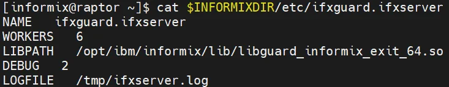
-
Next, create a configuration file for encrypted connections -
$INFORMIXDIR/etc/ifxguard.ifxserver_ssland populate it with the following contents:NAME ifxguard.ifxserver_ssl WORKERS 6 LIBPATH /opt/ibm/informix/lib/libguard_informix_exit_64.so DEBUG 2 LOGFILE /tmp/ifxserver_ssl.log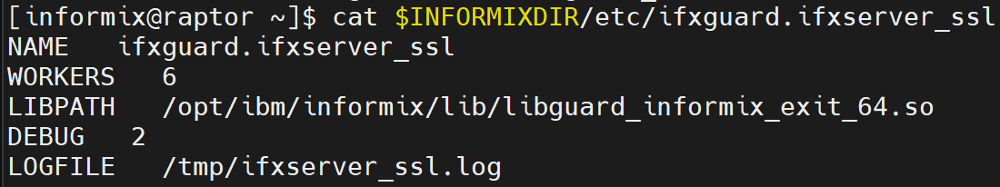
-
You can now start the EXIT services for each configuration (still in the informix user context).
1 2 3
ifxguard -c $INFORMIXDIR/etc/ifxguard.ifxserver ifxguard -c $INFORMIXDIR/etc/ifxguard.ifxserver_ssl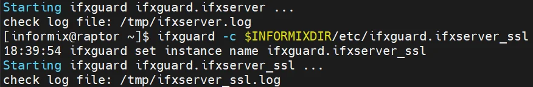
-
You must remove the Informix KTAP-based inspection engine definition from the STAP and add the correct configuration required for EXIT monitoring. To do this, use the API. From the cli session on coll1, execute the following command:
1 2 3
grdapi delete_stap_inspection_engine type=informix stapHost=raptor.demo.guardium grdapi create_stap_inspection_engine dbUser=informix dbVersion=15 client=0.0.0.0/0.0.0.0 protocol="Informix Exit" procName=/opt/ibm/informix/bin/oninit dbInstallDir=/home/informix stapHost=raptor.demo.guardium -
Once again, switch to the informix user on raptor, connect to the instance using SSL, and execute a query. This time, the activity should be properly audited and visible in Guardium.
Close database session inserting Ctrl+D and1 2 3 4 5 6 7
export INFORMIXSERVER=ifxserver_ssl dbaccess sysmaster - SELECT sid, TRIM(net_client_name) AS client_protocol, net_client_type, net_protocol, net_options, net_read_cnt, net_write_cnt FROM sysnetworkio WHERE sid = DBINFO('sessionid'); SELECT 'Second try of INFORMIX session with SSL';exitfrom informix user session.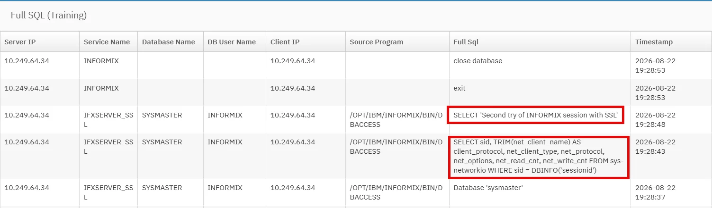
-
Stop Informix instance at the end of lab to free a raptor resources. As a root execute:
systemctl stop informix-ifxserver
{kind=link}
{kind=link}
{kind=link}
{kind=link}
{kind=link}
{kind=link}
{kind=link}
Appendix
Dependencies:
This lab deliverables are not referred in the other labs. So you can ignore it if needed.
Resources:
Instructor notes: